Old Great House • Eastern European Core
House Volkov
An old Ruthenian-rooted Great House shaped by invasion, partition, exile, regime change, civil war, confiscation, and repeated border shifts. Volkov culture assumes that governments, flags, and institutions are temporary; the dynasty survives by remaining adaptable, redundant, mobile, and personally bound across jurisdictions.
“Kings die. Empires disappear. Borders change. Volkov remains.”
StatusRecognized Great House
Historic IdentityRuthenian / East Slavic / Carpathian
Dynastic DignityKnyaz / Knyaginya Volkov
Ancestral SeatVovchyn Castle • Carpathian foothills
2026 Council StatusDeferred pending peer review
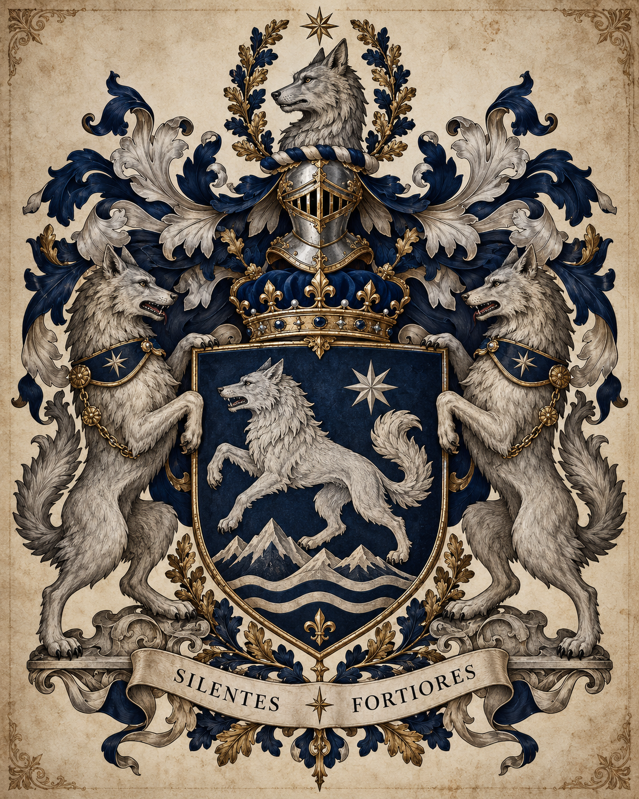

01
House Identity
HeadKnyaz Mikhail Aleksandrovich Volkov
HeirElena Mikhailovna Volkova
Principal SeatVovchyn Castle
Defining StrengthSurvival through adaptation and redundancy
Principal VulnerabilityFragmentation through excessive autonomy
House PrincipleNever make one regime indispensable
Core philosophy
Volkov assumes the map is temporary. A dynasty that binds itself too tightly to a single state, ideology, institution, fortune, or capital city has created a single point of failure.
The preferred Volkov response is redundancy: parallel networks, multiple jurisdictions, distributed assets, family members in different professions and countries, and relationships that survive even when public institutions collapse.
House-first doctrine
Volkov loyalty is explicitly dynastic. Family members may sincerely serve governments, militaries, professions, religions, political causes, or public institutions, but none outranks the House. The Order is valued because the Compact gives Great Houses a durable system for secrecy, recognition, restraint, adjudication, and survival.
Volkov's private formulation is simple: Volkov first. The Order is one of the reasons Volkov still exists.
02
Great-House Qualification
Stress test: restored peer with proven resilience03
Historical Development
House Volkov conventionally dates its documented foundation to 1158, under Yaroslav Vsevolodovich Volkov (c. 1124–1191), a Ruthenian military-landholding magnate in the political world that later develops into Galicia–Volhynia. Family traditions reach further into the eleventh century but remain unproven.
The Mongol invasions nearly destroy the dynasty. Volkov survives by dispersing family members, hiding records, evacuating children, abandoning indefensible holdings, negotiating where necessary, and rebuilding across several locations. The crisis becomes the foundational lesson that survival matters more than theatrical refusal to retreat.
Successive Volkov branches live under Ruthenian, Polish-Lithuanian, Habsburg, and Russian jurisdictions. Public language, religion, titles, and service change by branch and era while the hidden dynastic identity remains intact.
The senior line preserves an old princely dignity rendered in House and Order use as Knyaz / Knyaginya Volkov. Public recognition varies across jurisdictions, but the Order treats the dignity as dynastic rather than dependent upon a single surface state.
Revolution, civil war, Polish-Soviet conflict, confiscation, border change, and collapse of old aristocratic structures devastate Volkov simultaneously across several branches. Estates, archives, industrial holdings, personnel, and patronage networks are lost or scattered.
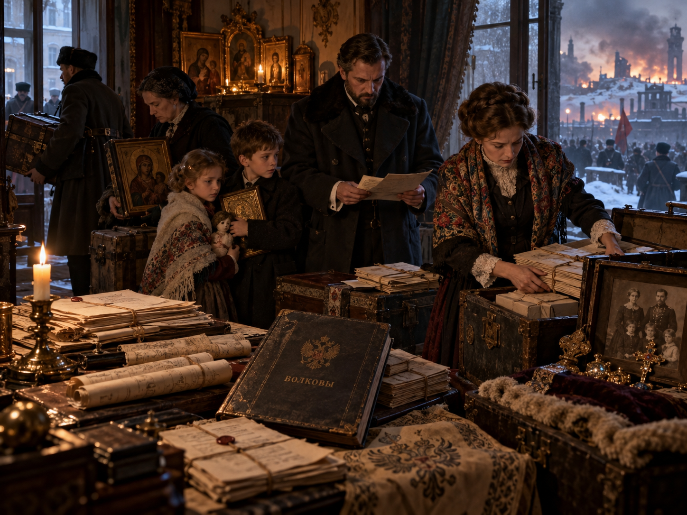
Volkov temporarily loses Great-House standing because it can no longer reliably perform the constitutional functions expected of a peer. The dynasty survives under reduced protected status, with House Falkenrath acting as its principal sponsoring and protective Great House. Volkov remains permanently grateful for the protection and permanently uncomfortable that it was ever required.
Volkov members publicly serve or operate under several hostile regimes and opposing wartime systems while hidden family channels remain active across those divisions. The House protects blood relatives, records, patrons, and Order obligations regardless of public alignment. This performance becomes central evidence that the dynasty has recovered functional sovereignty.
With wartime survival proven and core family communications restored, Volkov petitions for return to full Great-House standing in 1948. The resulting Restoration Review examines whether the House can again perform the practical obligations of a sovereign peer without dependence on its Falkenrath protector.
The review focuses on five tests: functioning succession and command; independently controlled finances and protected reserves; secure communications across branches and jurisdictions; a reliable House Register and recoverable archives; and the ability to fulfill Compact obligations without another Great House acting as guarantor.
The Conclave recognizes Volkov’s restored peer status through the Instrument for the Restoration of House Volkov. The finding is explicit that restoration is not a reward for wartime political alignment and not a gift from Falkenrath. Volkov has demonstrated that it again possesses independent dynastic command, resources, continuity, and the ability to answer for its own members and obligations.
Falkenrath’s formal protective sponsorship terminates upon restoration. No continuing supervisory right, veto, debt of obedience, or constitutional claim survives the arrangement. The historical debt remains one of gratitude and memory rather than subordination.
The Instrument also requires Volkov to preserve the reforms proven during the review: distributed protected reserves, redundant archives and communications, verified branch contacts, a functioning internal disciplinary jurisdiction, and a succession mechanism capable of operating during exile or disrupted communications. These requirements become the basis of the modern Volkov continuity system rather than externally imposed permanent controls.
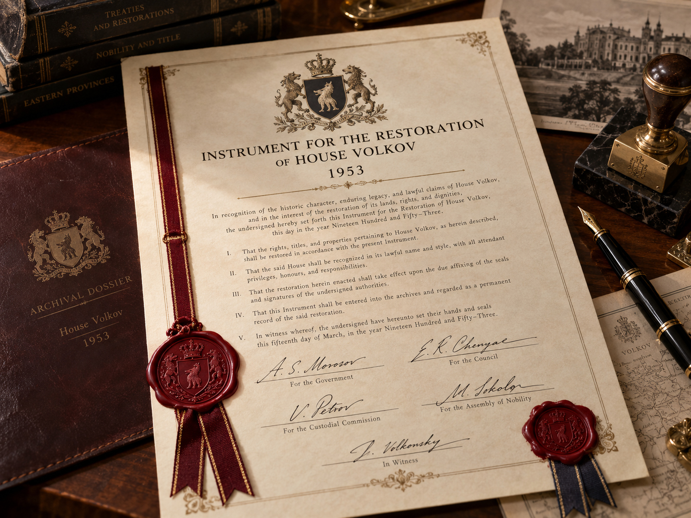
Volkov builds redundant influence across Soviet and Eastern European security, military, scientific, industrial, administrative, transport, academic, informal-market, émigré, and commercial networks. No single public institution contains the whole system.
The collapse of the Soviet Union creates an extraordinary period of reconstruction. Volkov converts old relationships and claims into commercial holdings, restored properties, transport and logistics interests, energy exposure, financial assets, and new political and institutional connections without becoming dependent on any one successor state.
Volkov is again a strong Great House whose modern credibility rests less on any single fortune than on the knowledge that it has already survived near-destruction and rebuilt itself once before.
04
Geography & Influence
Core and deep influence
The ancestral core lies in the Carpathian borderlands of western Ukraine. Modern Volkov influence is strongest across western and central Ukraine and Belarus, with deep historic and contemporary networks extending into eastern Poland and western Russia.
Contested and legacy zones
The Baltic states are an important overlap zone, especially with Veyrholm. Broader legacy networks persist through Moldova, the Caucasus, Kazakhstan, and other parts of the former Soviet industrial and administrative sphere. None of these regions is treated as exclusive Volkov territory.
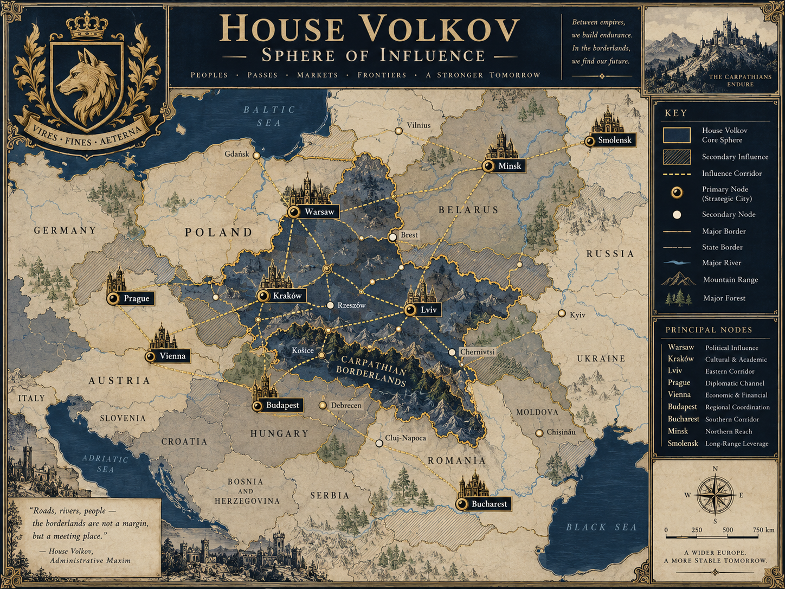
05
2026 Leadership & Senior Family
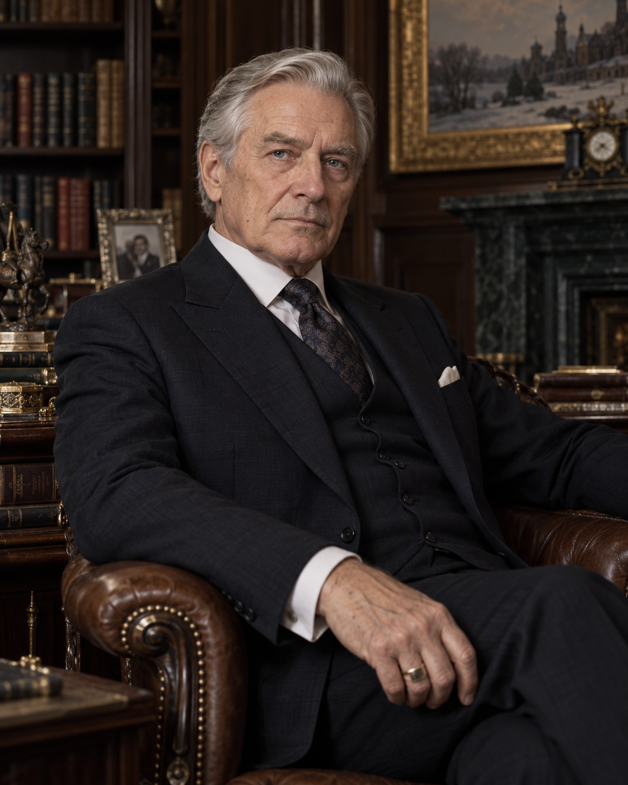
Head of House
Knyaz Mikhail Aleksandrovich Volkov
Born February 18, 1954 • age 72. Publicly educated in applied mathematics and systems analysis and later employed in large-scale transportation and industrial planning. Increasingly central to House reconstruction during the late Soviet and immediate post-Soviet years. Succeeded as Head in 2001.
Leadership principle: never risk the family for an asset that can be reacquired in another generation.

Consort • Cultural Scholarship
Dr. Kateryna Bohdanivna Melnyk
Born June 7, 1956. Ukrainian ethnomusicologist and cultural historian specializing in Carpathian and East European traditional music, oral history, and endangered folk traditions. Married Mikhail in 1979. Keeps Melnyk professionally. Deeply inducted over decades of marriage but holds no constitutional House office.

Heir • Deputy Head for Continuity
Elena Mikhailovna Volkova
Born September 21, 1980 • age 46. Trained as a trauma and emergency physician before progressively assuming House continuity responsibilities. Recognized presumptive heir and 2026 Deputy Head for Continuity.
Elena’s leadership doctrine refines her father’s survival philosophy: “Do not merely survive disruption. Prepare to function during it.” Her medical background shapes a governing style built around triage, stabilization, redundancy, recovery, and deciding what must be preserved first when systems fail.

Spouse of the Heir • Trauma Surgery
Dr. Tomasz Aleksander Zieliński
Born November 8, 1978 • Kraków, Poland. From a professional non-aristocratic family; father a civil engineer, mother a university librarian. Orthopedic trauma surgeon specializing in complex limb reconstruction, severe accident injury, and disaster medicine.
He met Elena through professional medical circles and later worked with her during an international hospital exchange. They married on August 26, 2006. Tomasz initially entered the family through ordinary spousal patronage and limited disclosure; over time he underwent formal Order induction and by 2026 is deeply inducted. He holds no constitutional House office and receives no princely dignity through marriage.

Second in Main Succession • University Student
Knyazhna Mariya Elena Volkova
Born March 11, 2008 • age 18. Eldest child of Elena and Tomasz. Beginning university studies at Charles University in Prague in linguistics and computational language technology, with interests in Slavic linguistics, language change, natural-language processing, and digital preservation.
She has completed initial Order induction and begun formal adult House formation. She is nowhere near senior authority and holds no House office.
Third in Main Succession • Secondary School
Aleksander Mikhail Volkov
Born June 29, 2011 • age 15. Interested in aviation, mechanical systems, gliding, engines, and fabrication. He has received age-appropriate House formation but has not yet undergone formal Order induction.
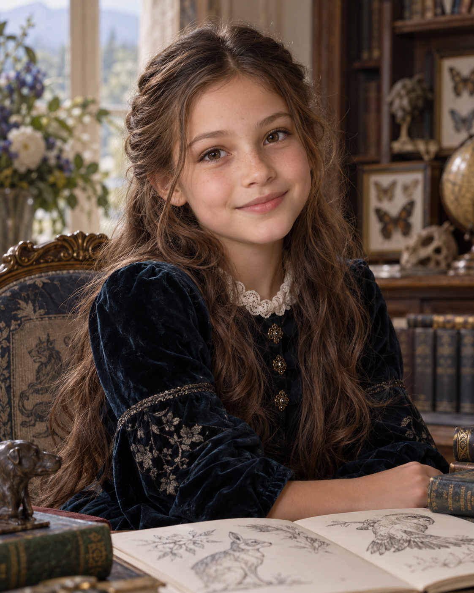
Fourth in Main Succession • Junior Family Member
Katarzyna Sofia Volkova
Born February 4, 2015 • age 11. Early interests include animals, drawing, and natural history. No Order induction; future education and profession remain intentionally open.

Senior Blood Member • Documentary Film
Anton Mikhailovich Volkov
Born April 12, 1984 • age 42. Documentary filmmaker and producer focused on historical memory, migration, disappearing communities, and post-conflict societies. Fully inducted but intentionally outside routine House administration.
Married Klára Novotná (b. August 17, 1986), a Czech documentary editor and sound designer, in 2013. Klára is deeply integrated and inducted but holds no House office. Their daughter, Eva Antonovna Volkova (b. May 5, 2016), is a junior blood member with no formal Order induction.
Senior Blood Member • Ecology
Irina Mikhailovna Volkova
Born December 3, 1989 • age 36. Ecologist specializing in forest and watershed restoration, with substantial work in the Carpathians and Central/Eastern Europe. Participates in Volkov land and environmental stewardship without holding a major constitutional office.
Unmarried and without children in 2026. Her field-intensive career and international environmental work have taken priority over dynastic household formation, which the House does not treat as a failure of duty.

Keeper of the Register and Memory
Dr. Sofia Aleksandrovna Volkova
Born July 19, 1959. Mikhail’s younger sister. Historian, archivist, and specialist in Slavic manuscripts, wartime provenance, and archival reconstruction.
Widowed from Andrei Pavlovich Morozov (1957–2018), a historian and museum curator who was deeply inducted but never became a constitutional Volkov. Their son, Kirill Andreyevich Volkov (b. February 16, 1987), is a forensic accountant and financial-investigations specialist. Kirill’s children are Anna Kirillovna Volkova (b. 2016) and Mikhail Kirillovich Volkov (b. 2019).

Chancellor of External Relations • Standing Conclave Delegate
Viktor Leonidovich Volkov
Born May 2, 1963. Mikhail’s first cousin, son of Leonid Mikhailovich Volkov (1927–2004), younger brother of Mikhail’s father Alexander Mikhailovich Volkov (1924–1999).
Married Dr. Elena Marković (b. 1965), a Serbian political historian and former university professor. Their children are Nadia Viktorovna Volkova (b. 1991), an aviation-law and aircraft-leasing executive, and Leonid Viktorovich Volkov (b. 1994), a classical pianist and conservatory lecturer.

Steward of Bonds and Patronage
Natalia Mikhailovna Volkova
Born November 6, 1964. A second cousin from a senior collateral line descended from Sergei Aleksandrovich Volkov, a younger brother of Mikhail’s grandfather; daughter of Mikhail Sergeyevich Volkov (1936–2008).
Married Janusz Marek Ostrowski (b. 1962), a Polish education-policy scholar and former university administrator. Their children are Aleksandra Natalia Volkova (b. 1990), a pediatric occupational therapist and disability-services administrator, and Marek Mikhail Volkov (b. 1993), a commercial horticulture and controlled-environment agriculture specialist.

Elena’s Household & Succession
Elena and Tomasz maintain their primary household outside Kraków, within practical reach of the city and medical institutions, while Elena also keeps secure rooms and residences elsewhere, including at Vovchyn Castle. Tomasz retains his own surname; the children carry Volkova/Volkov because Elena is the recognized dynastic heir.
The senior-line succession in 2026 is: Mikhail Aleksandrovich → Elena Mikhailovna → Mariya Elena → Aleksander Mikhail → Katarzyna Sofia → Anton Mikhailovich → Eva Antonovna → Irina Mikhailovna → Sofia Aleksandrovna → Kirill Andreyevich → Anna Kirillovna → Mikhail Kirillovich → Viktor Leonidovich → Nadia Viktorovna → Leonid Viktorovich, followed by more distant senior collateral lines, including Natalia’s descendants, before recognized cadet branches are reached.
If the viable senior line is exhausted, cadet-branch priority is Drohobyr → Dvina → Cheremosh → Smolensk, with the lawful branch succession determining the candidate subject to the House Continuity Override.
Mikhail and Elena share the same survival doctrine but differ in emphasis. Mikhail’s generation favors hidden capacity that cannot be seized; Elena argues that excessive secrecy can itself become a point of failure when too few people know how to operate essential systems. Their tension is strategic rather than personal and represents the House’s generational evolution.
06
Cadet Branches

Drohobyr Line
Aleksander Jan Volkov
Current head of the Polish-Galician cadet branch; architectural historian and heritage-restoration executive.

Dvina Line
Nikolai Sergeyevich Volkov
Current head of the Belarusian cadet branch; retired civil and transportation engineer.

Cheremosh Line • Senior Branch Representative
Dr. Oksana Petrova Volkova
Current head of the Cheremosh Line and 2026 Senior Branch Representative on the Rada; veterinary epidemiologist.

Smolensk Line
Dr. Sergei Dmitrievich Volkov
Current head of the Smolensk Line; materials scientist and metallurgist.
Drohobyr Line — founded 1463
Established by Roman Yaroslavovich Volkov, a younger son whose descendants develop a durable western line in the Polish-Galician sphere. Over centuries the branch becomes heavily Polonized in language, religion, education, and public service without losing Volkov identity.
Traditional strengths include law, municipal administration, universities, railways, publishing, and professional civil service. The current branch head is Aleksander Jan Volkov (b. August 9, 1962, Kraków), an architectural historian and heritage-restoration executive, married to Dr. Marta Zofia Kaczmarek (b. 1964), an architectural conservator.
Branch succession begins with Zofia Aleksandra Volkova (b. 1988), a conservation scientist; her daughter Helena Marta Volkova (b. 2017); then Piotr Roman Volkov (b. 1991), a railway-systems engineer with two children; and Michał Stefan Volkov (b. 1995), a literary translator and independent publisher. The branch has roughly 35 recognized living blood descendants.
Dvina Line — founded 1548
Established by Vasily Romanovich Volkov through northern landholding and marriage connections in the Belarusian sphere. The line remains predominantly Orthodox and later becomes publicly Belarusian and Russian-speaking while retaining internal Volkov identity.
Its traditions center on forestry, river trade, estate administration, surveying, roads, rail, and industrial logistics. The current branch head is Nikolai Sergeyevich Volkov (b. January 27, 1958), a retired civil and transportation engineer.
His children are Pavel Nikolayevich Volkov (b. 1983), a freight-network and terminal-planning specialist and branch heir; Tatiana Nikolayevna Volkova (b. 1987), a forest geneticist; and Yuri Nikolayevich Volkov (b. 1990), an orchestral percussionist and conservatory instructor. The branch has roughly 28 recognized living blood descendants.
Cheremosh Line — founded 1672
A Carpathian branch that spends long periods under Habsburg jurisdiction and develops a mixed Ruthenian, Ukrainian, Austrian, Hungarian, Romanian, and Central-European cultural environment. Its historical strengths include mountain forestry, mineral rights, river management, surveying, border routes, veterinary medicine, and hydroelectric development.
The current branch head is Dr. Oksana Petrova Volkova (b. May 14, 1966), a veterinary epidemiologist specializing in livestock disease surveillance and transboundary animal-health systems. She also serves as the 2026 Senior Branch Representative on the Rada. Her husband, Dr. Petro Andriyovych Kovalchuk (b. 1964), is a hydrologist and watershed-management specialist.
Their children are Marta Petrova Volkova (b. 1992), a mountain-rescue physician and wilderness-medicine specialist and branch heir; Andriy Petro Volkov (b. 1995), a renewable-energy project engineer; and Lidia Petrova Volkova (b. 1999), an equine veterinarian. The branch has roughly 40 recognized living blood descendants.
Smolensk Line — founded 1797
Formally established by Dmitri Andreevich Volkov after imperial realignment and the partitions. It becomes the most publicly Russian Volkov branch, associated with army engineering, artillery science, railways, metallurgy, technical education, and later Soviet scientific and industrial institutions.
The branch is devastated after 1917 but rebuilds through the Soviet technical class. Its current head is Dr. Sergei Dmitrievich Volkov (b. October 3, 1960), a materials scientist and metallurgist.
His children are Dmitri Sergeyevich Volkov (b. 1986), an aerospace materials engineer and branch heir; Elena Sergeyevna Volkova (b. 1989), a medical physicist; and Alexei Sergeyevich Volkov (b. 1993), an architectural and industrial-landscape photographer. The branch has roughly 22 recognized living blood descendants.
Volkov-Kiev — extinct constitutional branch
Once a powerful urban and administrative cadet line, Volkov-Kiev becomes deeply tied to imperial institutions and property. Revolution and civil war destroy its institutional continuity, and the branch ceases to exist constitutionally in 1924. Roughly 15–20 living people can document descent from the line in 2026, but they do not collectively constitute a constitutional branch. Reconstitution would require a new charter approved under House law.
Branch law
Recognized branches may differ in language, religion, citizenship, surname rendering, public title, and political culture. The senior House does not require cultural uniformity. It requires verified descent, secure communication, House continuity, Compact compliance, and refusal to subordinate branch identity permanently to an outside institution.
The Senior Branch Representative is selected through a five-year Conclave of Branches, with consensus preferred. Failing consensus, each recognized branch votes and the senior line breaks a tie. The Head confirms the nominee.
07
Governance & Succession
Presumptive Primogeniture with Continuity Override
The eldest qualified descendant of the Head is the presumptive heir, but succession is not mechanically absolute. Incapacity, refusal, catastrophic misconduct, gross incompetence, or another extraordinary continuity failure may justify bypassing the presumptive heir.
An override requires the Head plus six of the other seven members of the Rada, or seven of eight Rada votes if the Head is incapacitated or personally conflicted. Preference alone is insufficient.
The Three-Line Requirement
Volkov considers the dynasty constitutionally vulnerable whenever fewer than three independently viable dynastic lines remain capable of producing a qualified future Head. When that threshold is crossed, the Rada automatically enters succession-security status: genealogy is reverified, protection of viable lines increases, branch integration is intensified, and continuity planning takes priority over ordinary internal politics.
The traditional formulation is: “One heir is a person. Two heirs are hope. Three lines are continuity.”
The Rada of House Volkov
The modern governing body has eight seats: Head of House; First Heir / Deputy for Continuity; Chancellor of External Relations; Warden of Security; Keeper of the Register and Memory; Steward of Holdings and Routes; Steward of Bonds and Patronage; Senior Branch Representative.
A 4–4 division on an ordinary matter is resolved by the Head. Extraordinary succession, Great-House standing, or other protected constitutional acts follow higher thresholds defined by House law.
Operating culture
The Rada is less procedurally theatrical than Wycliffe's Stewardship Council or Falkenrath's Hausrat, but not less real. Volkov practice assumes that a useful constitution must survive disrupted communications, exile, destroyed offices, and contested jurisdictions.
Chancellor of External Relations
Viktor Leonidovich Volkov (b. May 2, 1963) is a senior collateral Volkov and the House’s principal inter-House negotiator. His public career spans diplomacy, transport-policy negotiation, and international energy and infrastructure agreements across Central Europe, the Caucasus, and Central Asia. He also serves as Standing Conclave Delegate.
Warden of Security
Andriy Mykolayovych Hrytsenko (b. October 14, 1968) is not Volkov blood. He comes from a long-protected family with multigenerational House ties, built a public military and security career, later worked in corporate risk and protective security, and was deeply inducted before appointment. His office demonstrates that Volkov professional authority is based on proven trust and capability rather than pedigree alone.
Keeper of the Register and Memory
Dr. Sofia Aleksandrovna Volkova (b. July 19, 1959), Mikhail’s younger sister, is a historian, archivist, and specialist in Slavic manuscripts, wartime provenance, and archival reconstruction. Her office maintains genealogy, succession evidence, sealed House records, dispersed archival claims, and the institutional memory required to reconnect records fragmented by revolution, confiscation, war, and exile.
Steward of Holdings and Routes
Oleksiy Romanovych Chernenko (b. February 23, 1971) is a deeply trusted non-blood professional and transportation/logistics executive with experience in rail freight, warehousing, ports, agricultural supply chains, and border infrastructure. He coordinates properties, logistical assets, contingency locations, and the redundant routes on which Volkov continuity depends.
Steward of Bonds and Patronage
Natalia Mikhailovna Volkova (b. November 6, 1964), from a senior collateral line, has a public career in education and philanthropic-foundation leadership. Her office maintains the House’s living map of patrons, protégés, protected families, multigenerational clients, obligations, favors, and inherited relationships.
Senior Branch Representative
Dr. Oksana Petrova Volkova of the Cheremosh Line serves as the 2026 branch representative after selection through the Conclave of Branches. Her presence reinforces that the seat represents branch trust and cross-line credibility rather than automatic seniority.
08
Resources & Continuity Infrastructure
Vovchyn Castle — Constitutional Seat
Vovchyn Castle remains the ancestral and constitutional seat. Major succession recognitions, branch convocations, family rites, archival ceremonies, and especially important House judgments traditionally occur there when circumstances permit. Mikhail maintains apartments at the castle, but it is not the sole administrative center and never holds the only copy of critical records.
Volkov House, Warsaw — Administrative Center
Volkov House, Warsaw is the principal management center of the Volkov Continuity Trust. It coordinates trusts, legal structures, international finance, risk management, insurance, succession planning, protected ownership, and professional staff. The building is important, but doctrine requires that losing Warsaw cannot stop House operations.
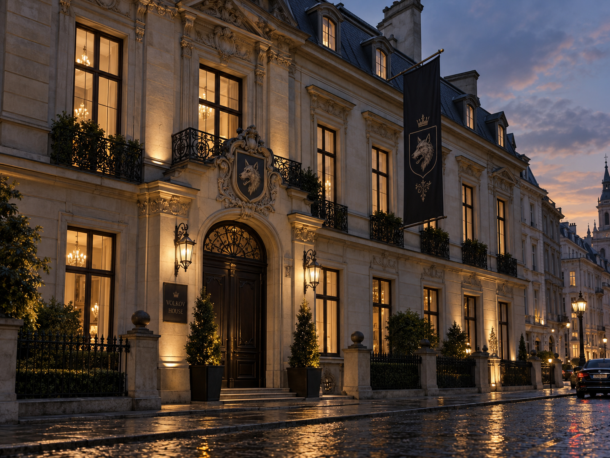
Kraków — Senior Family Hub
Elena and Tomasz maintain their primary household at Brzezina House, a restored country property roughly 30–40 minutes outside Kraków. Mikhail and Kateryna also keep a Kraków residence. The distinction is deliberate: Vovchyn is where the dynasty gathers; Kraków is where the family lives.
Lviv — Memory & Relationships
The Volkov Institute for Borderland History and Culture operates publicly as a genuine cultural and historical foundation focused on archival preservation, oral history, endangered languages, music, scholarship, and historic architecture. It also serves as a major node of the Memory Archive and one of Natalia’s densest patronage-record centers.
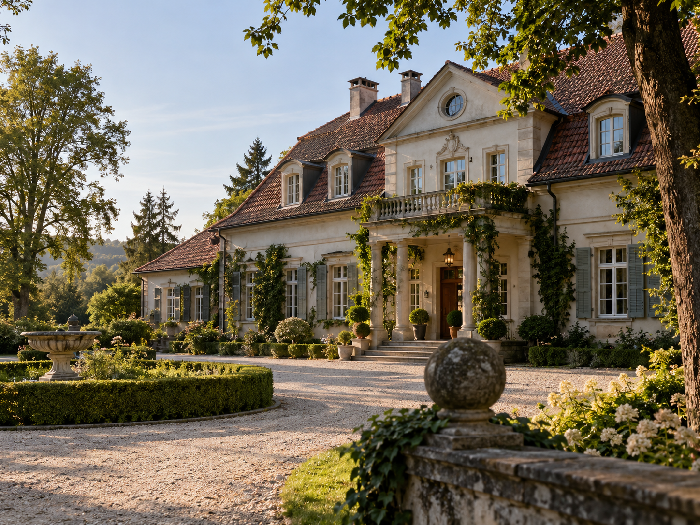
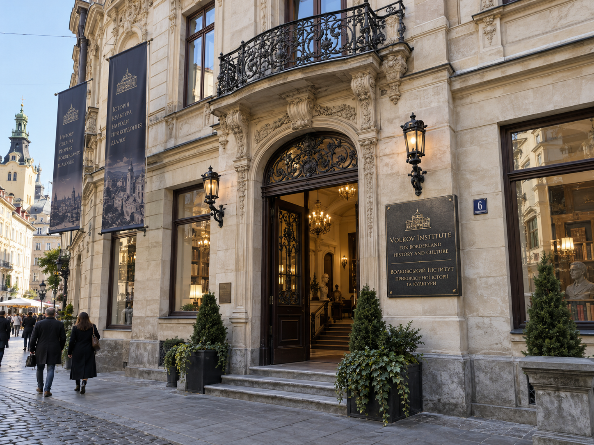
Kyiv Station
Kyiv Station is the internal designation for Volkov’s modern professional and operational center in Kyiv, connecting infrastructure, law, investment, philanthropy, healthcare, engineering, and government-facing networks. “Station” denotes a continuity node through which people, records, decisions, and support can move; it is not necessarily an intelligence facility.
Vilnius Station
Vilnius Station provides a northern-European continuity node for banking, technology, communications, legal access, protected records, emergency liquidity, and contingency accommodation. Its location also places it inside a long-standing Volkov–Veyrholm overlap zone.
Secondary Continuity Nodes
Smaller permanent assets and trusted facilities are maintained in Prague, Vienna, Bucharest, and Almaty. These are not full House centers but form part of a broader network of offices, residences, banking relationships, secure storage, medical support, logistical arrangements, and patron households.
Distributed wealth by design
Volkov is extremely wealthy but deliberately resists concentration. Senior-family direct and protected-trust wealth is estimated at roughly $8–12 billion equivalent, while broader House-controlled or influence-bearing assets plausibly total $30–45 billion. Unlike Falkenrath, Volkov does not rely on a single flagship conglomerate whose destruction or seizure could cripple the House.
Transport & LogisticsRail freight, inland terminals, warehousing, trucking, border logistics, river-port interests, and strategic minority stakes in transport infrastructure.
Agriculture & LandFarmland, forestry, grain storage, food processing, timber, watershed-linked land assets, and rural property across several jurisdictions.
Energy & Industrial ServicesGrid services, pipeline and industrial maintenance, district heating, energy logistics, selected renewable generation, and infrastructure-service businesses.
Manufacturing & MaterialsMedium-sized engineering firms, metallurgy, rail components, agricultural machinery, industrial maintenance, specialty metals, ceramics, and technical-materials holdings.
Private Capital & PropertyCommercial property, family investment vehicles, insurance interests, private credit, distressed-asset positions, and long-duration holdings spread across Central and Eastern Europe.
Volkov Continuity Trust
The Volkov Continuity Trust is the modern umbrella structure coordinating protected trusts, foundations, holding companies, family partnerships, contingency reserves, and succession-protected assets. Its principal public-facing management center is in Warsaw, while operational teams and controlled entities remain distributed across Kraków, Lviv, Kyiv, Vilnius, and other locations.
The Trust is not a single operating company. It exists to ensure that ownership, liquidity, records, and critical support functions cannot all be lost in one jurisdictional failure.
The Redundancy Principle
Volkov continuity doctrine requires strategically critical functions to maintain independent alternatives whenever practical. For banking access, archives, secure communications, medical support, contingency residences, protected reserves, and key logistics routes, the House normally seeks at least three viable alternatives across at least two jurisdictions.
The governing rule is simple: no asset may become important enough that losing it threatens Volkov continuity.
The Living Register
The Living Register contains current genealogy, marriages, births, succession, branch recognition, House offices, patronage status, induction status, protected relationships, and continuity data. It is continuously replicated, but its most sensitive portions remain compartmented.
The Memory Archive
The Memory Archive contains historical correspondence, estate records, diaries, photographs, branch papers, testimony, property evidence, wartime records, and documentation supporting the House’s historical claims. It is deliberately decentralized among Vovchyn, Lviv, Warsaw, branch archives, and protected repositories.
The Black Archive
The Black Archive contains material whose exposure could still damage the House or its people: disciplinary findings, compromised identities, sealed patron relationships, concealed ownership structures, intelligence records, historic betrayals, unresolved inter-House incidents, and other highly restricted files. Access is compartmented; even Rada office does not automatically confer unrestricted access.
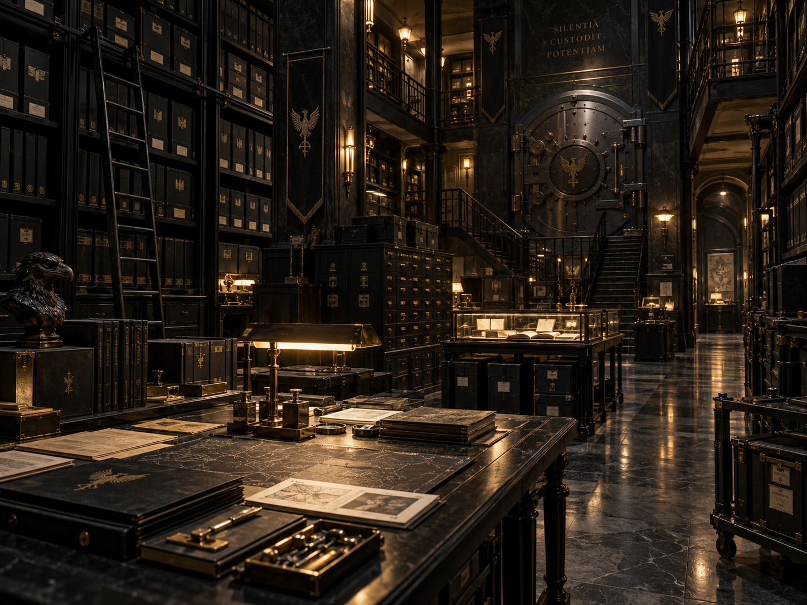
The Broken Map Exercise
Every three years Volkov conducts the Broken Map Exercise, a formal continuity test in which selected major assets are declared unavailable without advance notice. Scenarios typically remove one major city, one senior officeholder, one banking system, one archive location, and one primary communications route simultaneously.
The exercise tests succession verification, Rada continuity, protected support, patronage obligations, secure communications, archive access, medical and security support, and branch authentication. The Head may be deliberately declared unavailable. A traditional maxim is: “A plan that requires everyone to survive is not a plan.”
Continuity Chain
If normal Rada communications collapse, temporary command passes through the Continuity Chain: Head → recognized heir → next available Rada officer under a sealed precedence schedule → recognized branch heads. Emergency authority exists to keep the House functioning, not to rewrite it.
Temporary command cannot permanently alter succession, surrender Great-House status, dissolve the House, alienate the core Register, or execute other irreversible constitutional acts reserved to normal authority.
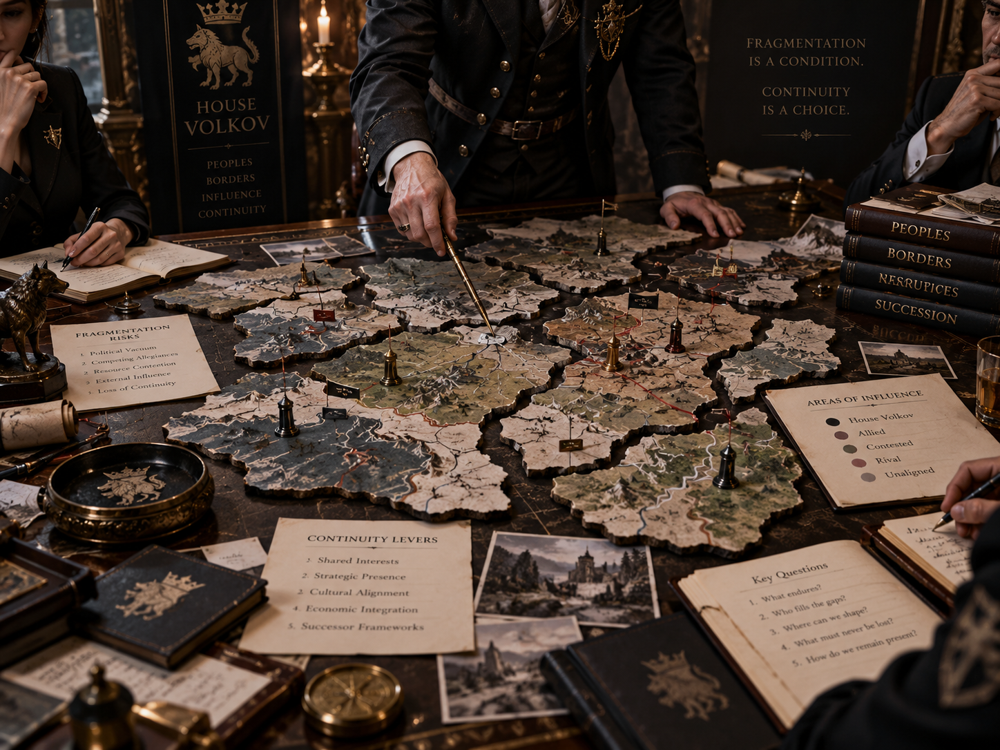
09
Patronage Culture
Volkov patronage is unusually personal and household-centered. The House tends to remember families rather than merely transactions: who hid a child, preserved an archive, treated an injured relative, moved someone across a border, kept faith during confiscation, or accepted Volkov protection when doing so was dangerous.
The common Order patronage levels apply, but Volkov uses informal cultural terminology: Level I — Favored; Level II — Attached; Level III — Under the Wolf; Level IV — Of the Household; Level V — Wolfbound.
“Wolfbound” does not mean blind obedience. It marks the deepest ordinary reciprocal bond between the House and a non-blood person or family. Some Wolfbound clients are deeply inducted; others remain outside the Order for life.
A traditional Volkov expectation is that protection creates responsibility in both directions. If Volkov accepted responsibility for a person when circumstances were favorable, the House should not disappear merely because circumstances become dangerous.
10
The Chamber of Responsibility
Volkov's mandatory internal disciplinary jurisdiction is known as the Chamber of Responsibility. It is assembled as needed from qualified senior family members and officers without direct conflicts in the case rather than functioning as a permanently sitting public-style criminal court.
The Chamber examines not only the immediate offender but the chain of responsibility: patron, sponsor, supervisor, officeholder, security function, and House response. Its central questions are what happened, who was responsible for whom, who knew, who failed to act, what damage remains, and what must be done to preserve the House and the Veil.
Patron responsibility is not automatic guilt. A conscientious patron can be deceived. But once warning signs are known, failure to act becomes independently relevant. The Volkov maxim is: “Responsibility follows the bond.”
11
Canon Control
LockedRuthenian/East Slavic/Carpathian identity; conventional documented foundation in 1158 under Yaroslav Vsevolodovich Volkov; Vovchyn Castle as ancestral seat; princely Knyaz/Knyaginya dignity; Mongol-era survival culture; multi-jurisdictional development; 1917–1921 collapse; temporary loss of Great-House standing; Falkenrath protection during reduced status; 1948–1953 Restoration Review; May 22, 1953 Instrument for the Restoration of House Volkov; restoration based on independent command, finances, communications, archives, branch accountability, and Compact capacity rather than wartime political alignment; Falkenrath protective sponsorship ending upon restoration without residual supervisory rights; Cold War redundancy doctrine; post-1991 reconstruction; Mikhail Aleksandrovich Volkov as 2026 Head; Kateryna Bohdanivna Melnyk as spouse; Mikhail’s parents Alexander Mikhailovich Volkov (1924–1999) and Iryna Oleksandrivna Hnatyuk-Volkova (1928–2011); Elena as heir and Deputy Head for Continuity; Elena’s marriage to Dr. Tomasz Aleksander Zieliński on August 26, 2006; Tomasz as deeply inducted orthopedic trauma surgeon without House office or princely dignity; their children Mariya Elena (b. 2008), Aleksander Mikhail (b. 2011), and Katarzyna Sofia (b. 2015); Mariya beginning Charles University studies in linguistics and computational language technology with initial Order induction complete; Kraków-area primary household; immediate succession Mikhail → Elena → Mariya → Aleksander → Katarzyna → Anton → Irina; Elena leadership doctrine centered on functioning during disruption; Anton’s marriage to Klára Novotná in 2013 and daughter Eva Antonovna Volkova (b. 2016); Irina unmarried and without children in 2026; Dr. Sofia Aleksandrovna Volkova as Mikhail’s younger sister, widow of Andrei Pavlovich Morozov, with son Kirill Andreyevich Volkov and grandchildren Anna and Mikhail; Viktor Leonidovich Volkov as Mikhail’s first cousin with spouse Dr. Elena Marković and children Nadia and Leonid; Natalia Mikhailovna Volkova as second cousin with spouse Janusz Marek Ostrowski and children Aleksandra and Marek; senior-line succession through Viktor’s children before more distant collateral and cadet lines; cadet fallback order Drohobyr → Dvina → Cheremosh → Smolensk; Three-Line Requirement; Presumptive Primogeniture with Continuity Override; eight-seat Rada; Viktor Leonidovich Volkov as Chancellor of External Relations and Standing Conclave Delegate; Andriy Mykolayovych Hrytsenko as non-blood Warden of Security; Dr. Sofia Aleksandrovna Volkova as Keeper of the Register and Memory; Oleksiy Romanovych Chernenko as non-blood Steward of Holdings and Routes; Natalia Mikhailovna Volkova as Steward of Bonds and Patronage; Dr. Oksana Petrova Volkova as Senior Branch Representative; senior-family direct/trust wealth approximately $8–12 billion equivalent and broader House-controlled or influence-bearing assets approximately $30–45 billion; Volkov Continuity Trust with Warsaw management center and distributed operational network; Vovchyn Castle as constitutional seat; Volkov House Warsaw as administrative center; Brzezina House outside Kraków as Elena’s family residence and Kraków as senior-family hub; Volkov Institute for Borderland History and Culture in Lviv; Kyiv Station and Vilnius Station as major continuity nodes; secondary nodes in Prague, Vienna, Bucharest, and Almaty; five modern resource pillars; Living Register, Memory Archive, and Black Archive; triennial Broken Map Exercise; Continuity Chain for emergency command; Redundancy Principle requiring multiple alternatives across jurisdictions for critical functions; Drohobyr Line founded 1463 under Roman Yaroslavovich Volkov with Aleksander Jan Volkov as current head, Zofia Aleksandra as branch heir, and roughly 35 living descendants; Dvina Line founded 1548 under Vasily Romanovich Volkov with Nikolai Sergeyevich Volkov as current head, Pavel Nikolayevich as branch heir, and roughly 28 living descendants; Cheremosh Line founded 1672 with Dr. Oksana Petrova Volkova as current head and 2026 Senior Branch Representative, Marta Petrova as branch heir, and roughly 40 living descendants; Smolensk Line founded 1797 under Dmitri Andreevich Volkov with Dr. Sergei Dmitrievich Volkov as current head, Dmitri Sergeyevich as branch heir, and roughly 22 living descendants; Volkov-Kiev extinct as a constitutional branch since 1924 with roughly 15–20 living documented descendants but no automatic right to reconstitute the branch; five-year Conclave of Branches with consensus-first selection and senior-line tie break; Volkov patronage terminology; Chamber of Responsibility; House-first doctrine.
Deferred — Global FrameworkOnly two items remain intentionally unresolved: 2026 International Council allocation, mandate, Councilor, and Deputy, to be decided after comparative review of all eleven Great Houses; and House Volkov’s Gift, to be established only after the global Great-House Gift framework is defined. All House-specific governance, family, succession, patronage, resources, residences, cadet branches, history, and visual canon are otherwise locked.